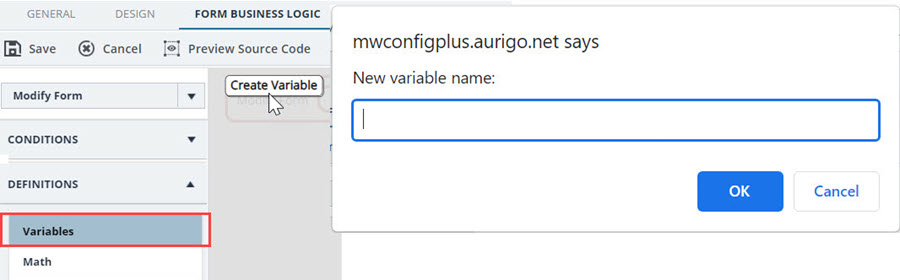

Variables enable you to collect information and execute conditions to perform checks. For example, if you want to get the Project Type
from the PROJECT DETAILS page and execute conditions on the Project Type, then you can use the Read Data block to get the Project Type and collect it
for a variable that can be used to execute conditions.
To create a variable, you can click Create Variable
and provide a name to the variable.Figure 1.

Once the variable is created, you can use it in blocks.Figure 2.